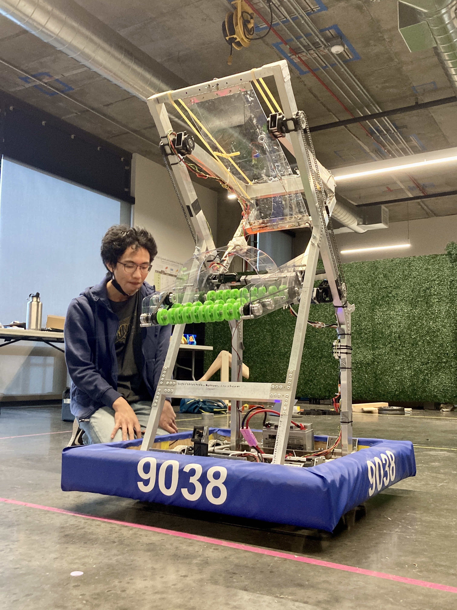

FRC Robot
Karl
Karl was SF Unity's first competition robot, built under a short development timeline by a new student team. The project centered on taking a proven robot architecture and adapting it into a compact, reliable machine that matched our tools, budget, student experience level, and competition goals.
On the mechanical side, the work involved translating CAD and reference geometry into parts we could actually fabricate, assemble, inspect, and repair between matches. We had to think carefully about packaging, weight, center of gravity, fastener access, wiring clearance, and how quickly students could diagnose problems when something loosened, bent, or stopped behaving as expected.
I helped lead fabrication and assembly, which meant organizing machining and hand-fabrication tasks, preparing parts for fit-up, guiding students through build work, and keeping the robot moving from subsystem mockups toward a competition-ready machine. A lot of the engineering happened in the gaps between design intent and physical reality: making small adjustments, validating clearances, improving serviceability, and deciding when a simple robust solution was better than a more ambitious one.
I also supported the non-technical structure around the project, including build-season scheduling, sponsor and grant coordination, and early team infrastructure such as business and outreach planning. Karl was as much a team-building project as it was a robot-building project, and it taught me how much good engineering depends on communication, ownership, and repeatable process.
The experience reinforced the value of simple, serviceable design under real deadline pressure. Karl taught me to prioritize reliability, clarity, and fast iteration: build something understandable, test it early, learn from failure, and keep improving the parts that matter most.
Robot Development
This project brought together design, fabrication, wiring, assembly, testing, and driver feedback into one fast-moving engineering cycle. The robot became a shared platform for learning how to turn ideas into working hardware: students could see how a CAD decision affected manufacturing, how a small packaging conflict could slow assembly, and how repeated testing exposed issues that were not obvious on paper.
My focus was on keeping the physical build practical and teachable. I cared about clean assembly sequences, accessible maintenance points, and a layout that new team members could understand quickly. That made the robot easier to improve throughout the season and gave the team a stronger foundation for future designs.

Team Process
Building Karl also meant building the team's process: dividing work, making decisions with limited time, documenting progress, and supporting each other through the pressure of competition season. Because the team was new, we had to create habits at the same time we were creating hardware.
I helped coordinate priorities across design, fabrication, fundraising, and outreach so the team could keep momentum without losing track of the bigger picture. The most important lesson was that a robot does not come together because one person understands every part; it comes together when the team has enough structure for everyone to contribute, ask questions, and take ownership.
